2026-10-06 · 技术状态 RESOLVED · READY FOR ACCEPTANCE
起点 HEAD 092b219。MEDIUM-01列表编辑入口仍缺失、MEDIUM-02追溯根选择部分完成：已最小补齐。MEDIUM-03菜单分组和MEDIUM-04共享定义在HEAD已真实解决，本轮补充实际Chromium证据。
正式代码/结果记录见 更新后的审查报告；结果及完整截图清单见 evidence.json。
类型检查、12项相关单元测试、构建通过；8项专项PC/移动端用例及8项直接回归通过。浏览器使用模拟现有契约响应，实际运行Vue页面；没有真实数据库验收或业务写入。独立代码审查无剩余阻断项，原有LOW bundle体积提示保留。
业务契约、API、DTO、权限、状态机、签名、数据库、Migration、FINAL BASELINE、已确认检验记录/报告和T5 PC结构均未修改。未commit/push，不推定人工验收。
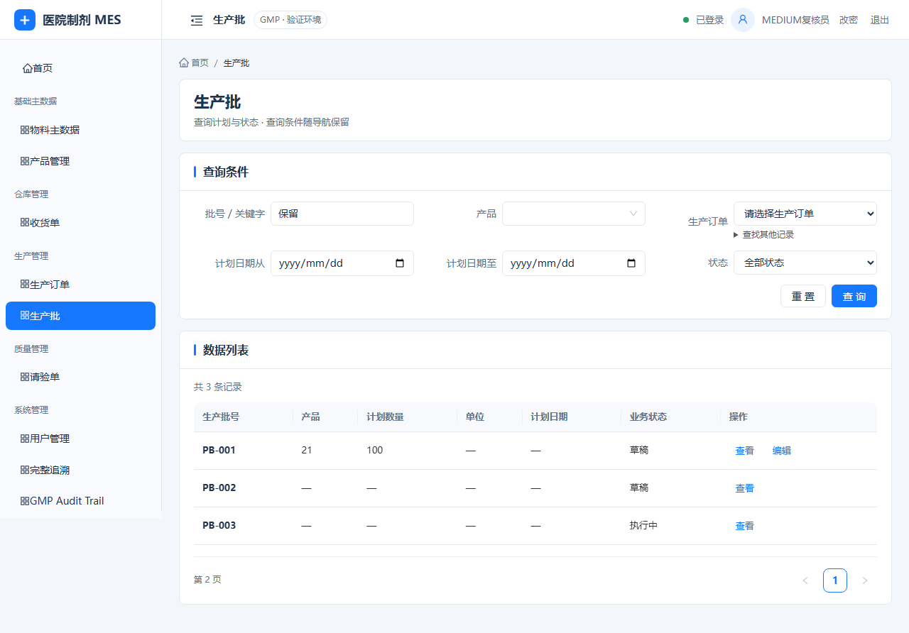
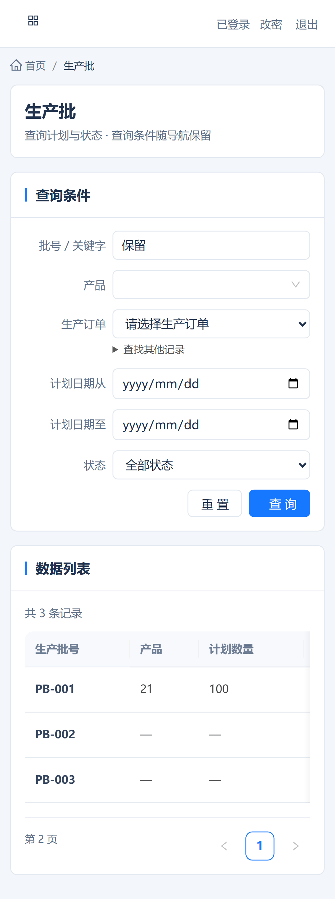
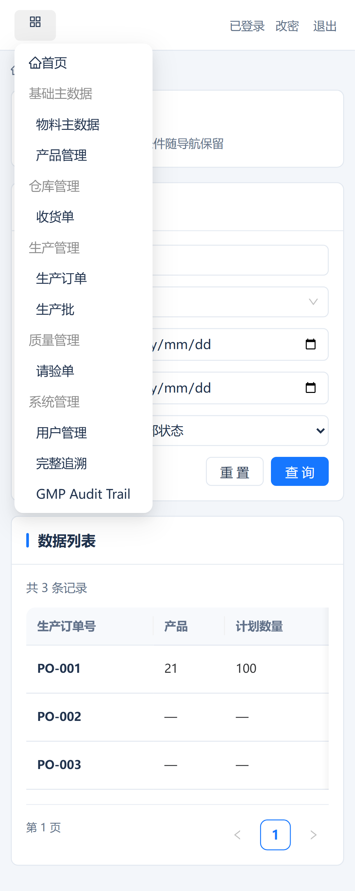
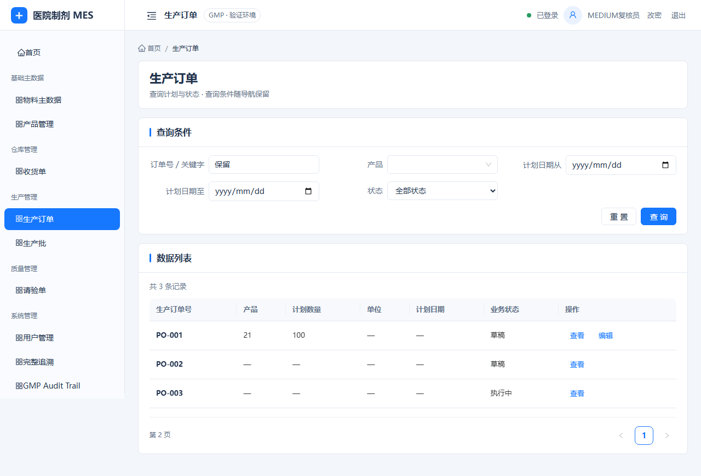
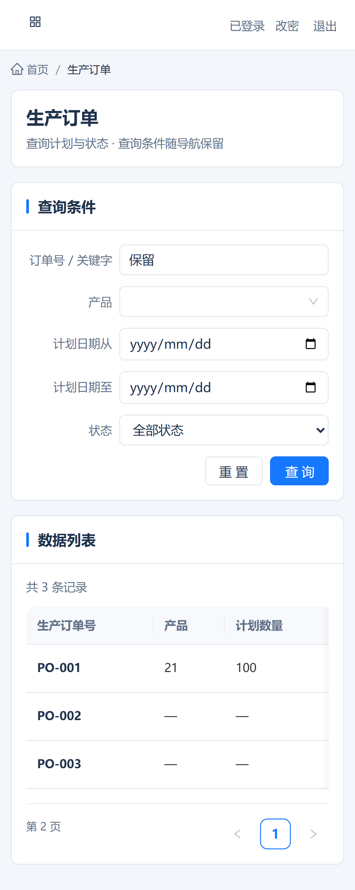
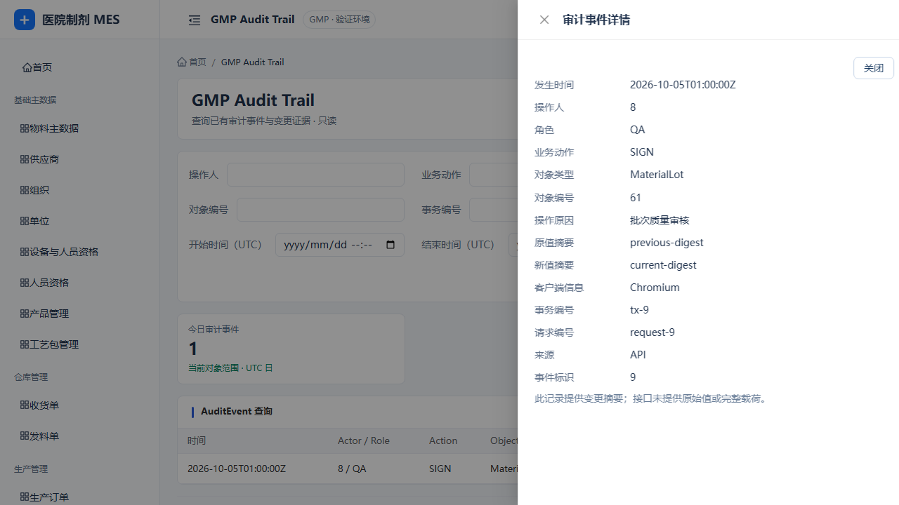
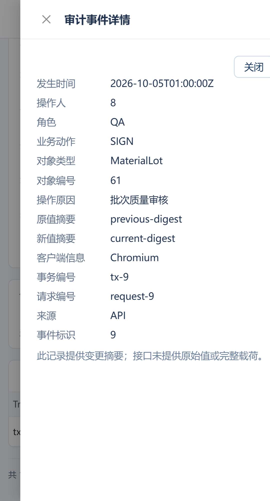
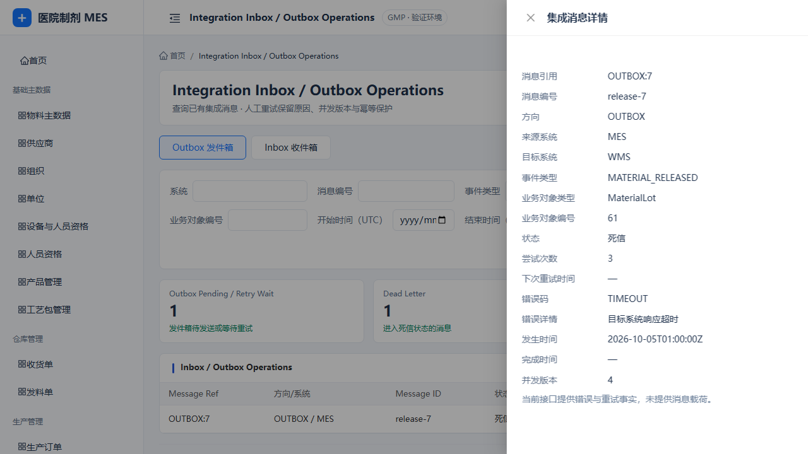
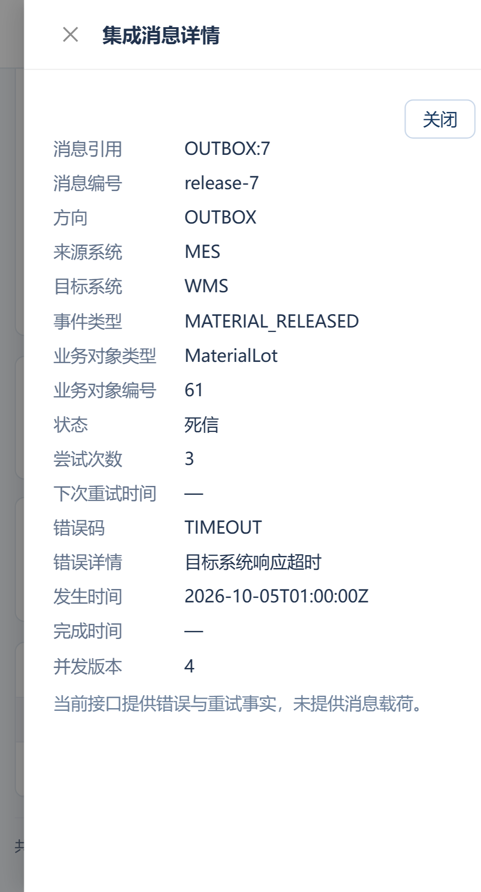
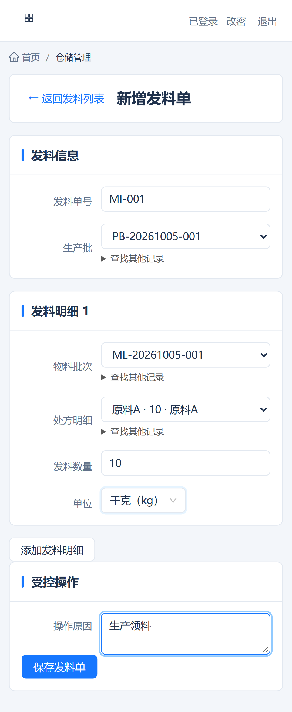
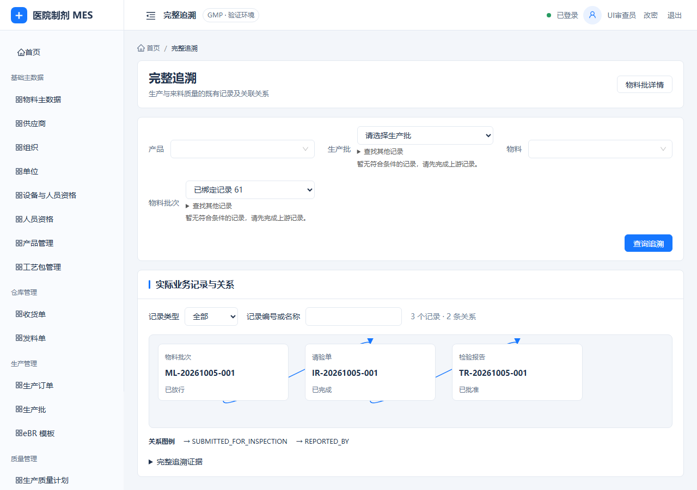
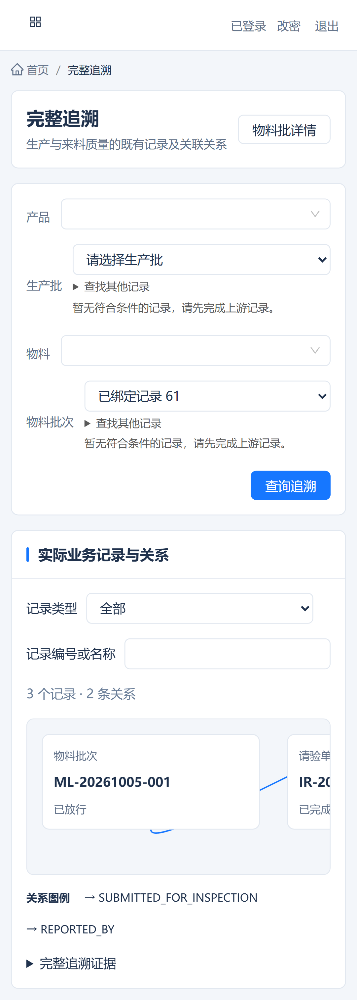
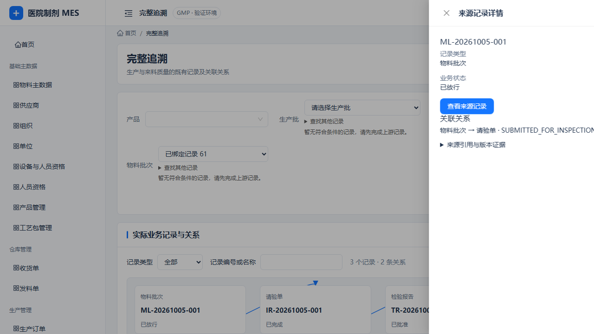
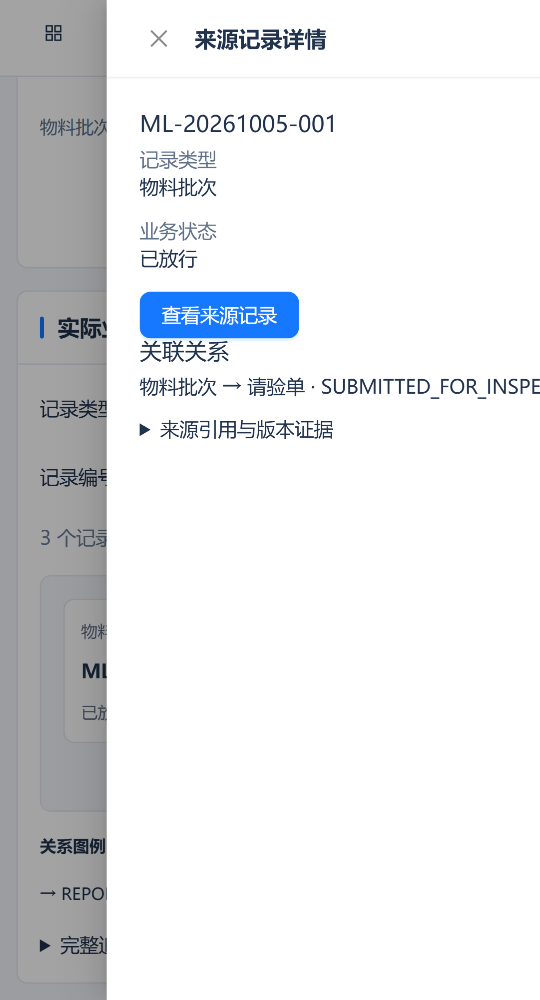
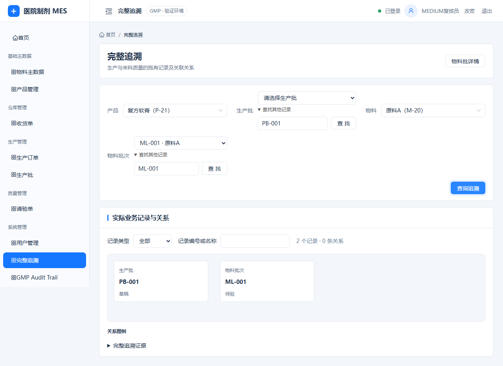
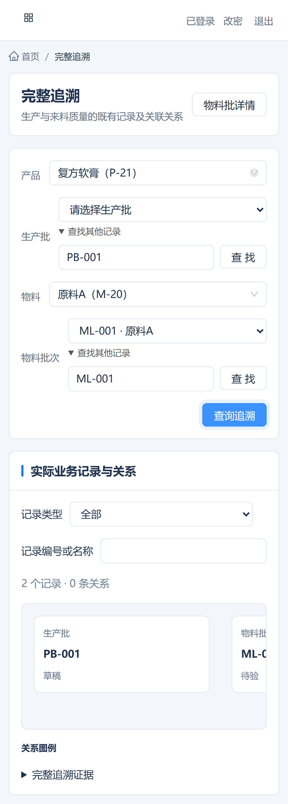